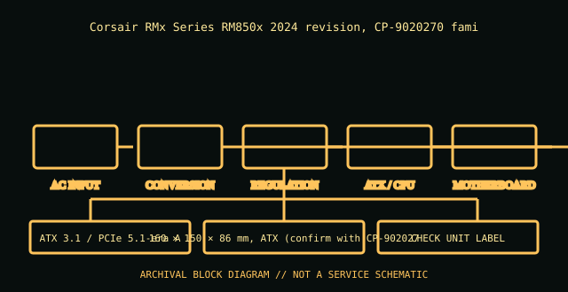

[ POWER CONVERSION // IDENTIFIED MODEL ]
Corsair RM850x (2024), CP-9020270
Corsair RMx Series RM850x 2024 revision, CP-9020270 family. This record is bounded to the named unit, standard revision, or model family below; nearby model names and replacement parts are not presumed equivalent.

HIGH-VOLTAGE SAFETY: Unplug before external inspection. Never open a power supply. Dangerous voltage can remain inside after it is disconnected. Do not attempt internal repair; use qualified service or replace the unit.
Verified identity & specifications
| Catalog identity | Corsair RMx Series RM850x 2024 revision, CP-9020270 family |
|---|---|
| Form factor / era | ATX 3.1 / PCIe 5.1-era ATX, 850 W |
| AC input | 100–240 V AC, 50/60 Hz; verify region suffix on PSU label. |
| DC output rating | 850 W continuous; combined +12 V rated 70.8 A class; read the DC output table for rail maxima and current sharing. |
| Mechanical envelope | 160 × 150 × 86 mm, ATX (confirm with CP-9020270 manual). |
| Connectors / interface | Fully modular 24-pin ATX/EPS/PCIe/SATA; newer revision includes 12V-2x6 GPU cable. Exact supplied connectors are SKU dependent. |
| Revision differences | Distinct from CP-9020200-series RM850x (2021). Different generation, connector/cable set and ATX revision: never treat the modular cables as interchangeable. |
Compatibility & safe handling
- Match full model, suffix, region, revision and DC output label to the official documentation. Rated total watts alone do not establish rail or transient compatibility.
- Before replacement, confirm AC input range, rail current/combined limits, motherboard signaling and pinout, mechanical envelope, fasteners, cooling direction, and every required connector.
- Never open the PSU, defeat protective earth, or probe its internals. Do not energize a wet, cracked, corroded, burned, modified, or unidentified supply.
- Modular cable pinouts are not standardized at the PSU end. Use only cables expressly approved for this exact model/revision; matching plugs can have different wiring.
Model and revision notes
Distinct from CP-9020200-series RM850x (2021). Different generation, connector/cable set and ATX revision: never treat the modular cables as interchangeable.
Corsair RMx manufacturer family and cable-compatibility pages; select the 2024 CP-9020270 manual/download rather than 2021 RM850x documents.
Archival notes
Store 2024 CP/SKU and all regional suffixes with hardware revision and cable inventory; archive nameplate photograph and current cable compatibility chart.
Photograph the complete nameplate, assembly/model code, revision/date code, input selector if present, cable ends and mounting side. Separate observed label data from published specifications and preserve the referenced manual issue.
Manufacturer / standards references
- Corsair RMx manufacturer family and cable-compatibility pagesCorsair RMx manufacturer family and cable-compatibility pages; select the 2024 CP-9020270 manual/download rather than 2021 RM850x documents.
- Intel — ATX / ATX12V Power Supply Design GuideStandards reference for the ATX electrical/mechanical family; use the revision specified for the product. Historical IBM supplies are not ATX and must not be adapted on this basis.
The exact nameplate and corresponding manufacturer manual remain controlling for regional and hardware revisions.